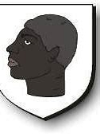

127750775 Else (Elslif) Kristiansdatter Vendelbo til Stövringgaard
Blev högst 85 år.

Född:
1359 Stövring, Sörup, Danmark.
Död:
mellan 1442 och 1445 Danmark.
Barn med
127750774 Lyder Johannesen Holck (1355? - >1437)
Barn:
Ide Lydersdatter Holck af Asdal (1375? - >1426)
Personhistoria
Årtal
Ålder
Händelse
1359
Födelse 1359 Stövring, Sörup, Danmark
1375?
Dottern
63875387 Ide Lydersdatter Holck af Asdal
föds omkring 1375 Alsdal, Hjörring, Danmark
>1426
Dottern
63875387 Ide Lydersdatter Holck af Asdal
dör efter 1426 Asdal, Hjörring, Danmark
>1437
Partnern
127750774 Lyder Johannesen Holck
dör mellan 1437 och 1440
>1442
Död mellan 1442 och 1445 Danmark